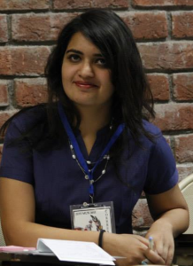
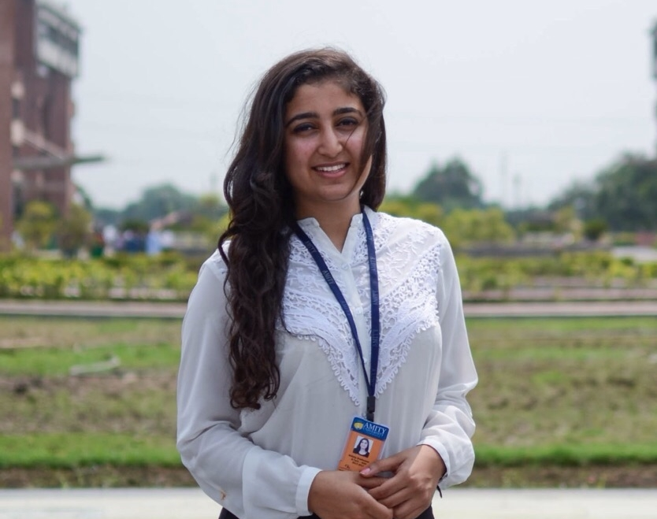

Secretariat AMIMUN'16
Chief de Cabinet: Dr. Alpana Kakkar

To all the members of the Amity family, invited esteemed personages, members from the diplomatic community, social thinkers, Ladies & Gentlemen, I feel so elated and honored to welcome you all to the celebration of high standard deliberations on world issues, the 5th Amity International Model United Nations Conference. I hope that you all have an amazing time witnessing some fiery speeches and witty retorts.
Secretary General: Pritika Kohli

Pritika Kohli is a 4th year student at Amity Law School and has been a constant part of the MUN family. She was the Under Secretary General of Delegate Affairs for AMIMUN'15. She has done 25 MUNs as a delegate and executive board member, some of which are as prominent as President of the HRC at WYMUN, Ahmedabad and Vice Chairperson of the Futuristic GA in IMT-N-MUN, Nagpur as well as Deputy Director General of World Health Organisation in Indore MUN.
Pritika is grateful and happy to serve as the Secretary General for AMIMUN'16 and looks forward to a highly successful and enjoyable conference for all the participants who would be joining us from all over the world.
Deputy Secretary General: Gurmehak Mann
Gurmehak Mann is a 3rd year student at Amity University pursuing her Bachelors of Technology in Biotechnology. She was introduced to the concept of Model UNs in 2010. She has since done 16 MUNs and continues to be a part of as many conferences as possible. She was a part of the AMIMUN Team since 2013 where she was the Deputy Under Secretary General of Delegate Affairs for AMIMUN’14 and Director General for AMIMUN’15.
Gurmehak is greatly looking forward to welcoming you to AMIMUN 2016, and she plans to work with the rest of the Secretariat and the staff to make the conference experience an unforgettable one!
Director General: Mohd. Talha Khan
Mohd Talha khan is a 3rd year Engineering student with an experience of 20 MUNs. He is a technical enthusiast and has worked for the social sector as well. He has been debating since 4th grade. Talha has been in the Organizing committee of various events in Amity School of Engineering and Technology and organized many events of IET and ACM. He was the Deputy USG of Delegate Affairs in AMIMUN'15 and is happy and grateful to be a part of AMIMUN'16.
Talha is honored to be serving as the Director-General of the fifth session of AMIMUN, which will be his third AMIMUN conference, and he is thrilled for the year ahead!
Charge d’Affaires: Palac Chhabra

Palac Chhabra is a fouth year student of Electronics and Communication at Amity University. Being a scholarship student for the last three years she has never underestimated the importance of technicality. However, she is of the view that communication skills hold an unparalleled position in our lives.
Having anchored more than twenty formal and informal events, she believes that a person who can express is a person who can achieve. She is the Vice President of the official literary society of her department and thus understands that the importance of a MUN conference does not only lie in the knowledge it shares but also in the confidence it imparts.
USG Delegate Affairs: Amlaan Bhoi

Amlaan Bhoi is a third year student at Amity University currently studying Computer Science and Engineering. He started his Model UN career during his sophomore year of high school in Thailand. After delegating/chairing in eight MUNs in various high schools in Thailand, he sought to further develop his experience for Model UN at Amity. Outside of Model UN, Amlaan is an active member of the Association of Computing Machinery, Amity Chapter as the Head in the technical department.
Amlaan is honored to be serving as the Under-Secretary General – Delegate Affairs of the fifth AMIMUN conference and he is looking forward to a wonderful conference in January!
USG International Press: Pankit Arora
Pankit Arora is a third year student at Amity University, pursuing his Bachelors of Technology in Information Technology. Pankit has been a part of 15 MUNs as an International Press member and continues to further participate in the conferences to the utmost.
Pankit is honored to be serving as the Under Secretary General - International Press for AMIMUN’16. He further invites everyone to encounter and share the brilliant experience at a conference where the International Press is recognized as a pivotal component that assures to present a detailed account of the happenings.
USG Finance: Rishabh Garg
Rishabh Garg is pursuing his Under Graduation in the field of Finance from Amity University, Noida. He is a 3rd year student of Amity College of Commerce and Finance. He has been a part of various organizing committees at the university level. He was also the core member of AMIMUN'15. He has a strong hold over in the field of finance and also been organizing various finance related activities at the university level.
Rishabh is honored to be serving as the Under Secretary General- Finance for AMIMUN’16.
UDG Sponsorship: Karan Patel
Karan Patel is a 3rd year student at Amity University currently studying Computer Science and Engineering. He is originally from Gujarat. He fell in love with Model UN during his freshman year of college, he sought to further develop his experience for Model UN at Amity. Outside of Model UN, Karan is a dynamic part of the Association of Computing Machineryand Institution of Engineering and Technology, Amity chapter as a core committee member in the technical department.
Karan is honored to be serving as Under Director General of Sponsorship of the fifth AMIMUN conference and he is looking forward to a wonderful conference in January!
UDG Hospitality: Nalin Panwar
Nalin Panwar is pursuing his Bachelor of Technology -- Computer Science and Engineering from Amity University, Noida. He has been enthusiastic about organizing events since 6th grade. In addition from the starting college days, he has been actively organizing events at various levels and is also the Secretary of Amity ACM Student Chapter. Nalin has always had a knack of being a diligent and an extremely integral part in many organizing committees including Confluence ’14, Confluence’15, ACM Decathlon.
Nalin is honored to be serving as the Under-Director General –Hospitality for AMIMUN’16 conference and is looking forward to a successful conference in January.
UDG Content Management: Nikhita Wadhawan

Nikhita Wadhawan is a strong willed young woman who is passionate about her dreams. Her choice of course, Mechanical and Automation Engineering, is testimony to that since it is statistically known to have less than 1% girls. She is an active participant in a wide variety of cultural activities of the various clubs in the University. Her prolific writing skills have made her an integral part of the official literary society of her department.
Nikhita is a perfect fit for the post of UDG Creative Content Management. She feels privileged to be chosen for the job will undoubtedly give it her best.
UDG Logistics: Samarth Mahajan
Samarth Mahajan is pursuing his studies in the field of computer science and engineering from Amity University, Noida. Since his school days he has been enthusiastic about organizing events at various levels. And this enthusiasm has only increased ever since. Samarth was part of the core organizing committee for AMIMUN’14 and served as the Deputy Under Secretary General –Logistics for AMIMUN’15.
Samarth is honored to be serving as the Under Director General –Logistics for AMIMUN’16 conference and is looking forward to a successful conference in January.
UDG Operations: Vidur Gupta
Vidur Gupta is a third year undergraduate student pursuing Mechanical and Automation Engineering. While he has a technical bent of mind he also has a flair for aesthetics and creativity. Over the three years in Amity University he organized many institute, university and inter-university level events successfully. He truly enjoys organizing and managing events and thrives under the responsibility of doing so.
He is grateful for having being chosen as the UDG Operations and is thrilled about the prospect of working with a great team for a conference of this magnitude.
Head Stage Management
|
Head Web Operations |
Head Design Kurush N Dhondy |
||||||
|
|
|
|
Joint Head Of International Affairs
|
Joint Head Of International Affairs |
Head Pre-Conference Newsletter Himanshu Poswal |
|
|
|